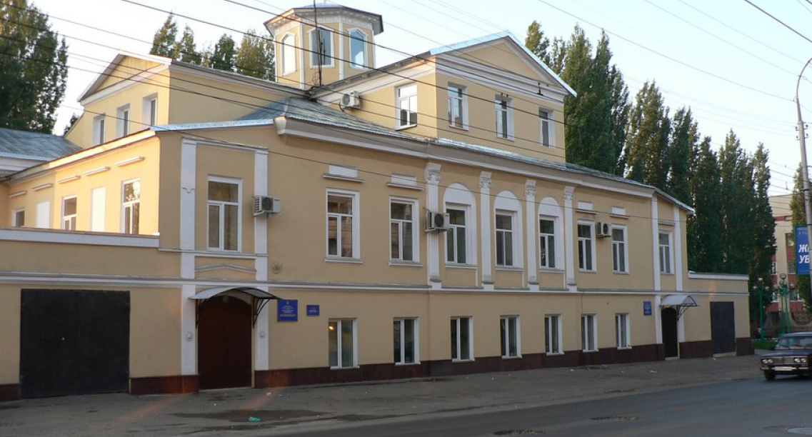

20 Марта, 2020
20 Марта, 2020 20 Марта, 2020
20 Марта, 2020

Мелиоративный комплекс Саратовской области является одним из самых крупных в Приволжском федеральном округе. Вот уже более 60 лет ФГБУ «Управление «Саратовмелиоводхоз» развивает и поддерживает мелиоративные системы в работоспособном состоянии и является гарантом стабильного производства сельскохозяйственной продукции в характерных для региона природно-климатических условиях.
Основной целью ФГБУ «Управление «Саратовмелиоводхоз» является создание необходимых условий для увеличения объемов производства высококачественной сельскохозяйственной продукции на основе восстановления и повышения плодородия почв и земель сельскохозяйственного назначения при выполнении комплекса агротехнических, гидромелиоративных, культуртехнических, гролесомелиоративных, водохозяйственных и организационных мероприятий, эксплуатации мелиоративных систем, переданных Учреждению в оперативное управление, и реализации федеральных целевых программ на территории Саратовской области.
Сегодня ФГБУ «Управление «Саратовмелиоводхоз» - это 10 структурных филиалов по эксплуатации государственных систем и головное Управление. Здесь трудятся 2075 человек, которыми накоплен огромный бесценный опыт в мелиорации и ежедневными усилиями которых удается не только сохранять, но и развивать мелиоративный комплекс Саратовской области. Управление находится в ведомстве Министерства сельского хозяйства Российской Федерации и подчиняется непосредственно Департаменту мелиорации.
На сегодняшний день Саратовская область занимает одно из ведущих мест среди крупнейших регионов нашей страны по объему орошаемых площадей. Орошаемое поле области составляет 257,3 тысячи гектаров, а полив осуществляется на 160 тысячах гектаров. Именно благодаря орошению в регионе с каждым годом увеличивается урожайность агрокультур и повышается уровень жизни сельского населения. В 2015 году на орошение сельскохозяйственных земель было подано 315 млн кубических метров воды.
На балансе Управления находится 286 стационарных электрифицированных насосных станций, в которых установлено 1180 агрегатов суммарной мощностью 623,3 мВт, 58 водохранилищ емкостью от 0,5 до 115 млн м3 суммарным объемом 567,05 млн м3 воды, 1002 километра магистральных и распределительных каналов, более 500 сложных гидротехнических сооружений.
Ежегодно ФГБУ «Управление «Саратовмелиоводхоз» обеспечивает водой в объеме 200 млн м3 население Левобережных районов Саратовской области и Республики Казахстан. Объем, который, согласно договорным отношениям, ФГБУ «Управление «Саратовмелиоводхоз» подает в Республику Казахстан, составляет порядка 80 млн кубических метров воды. Только на территории Саратовской области по рекам Малый и Большой Узени пропуск воды осуществляется на протяжении более 1000 км через 36 гидротехнических сооружений. Основные виды деятельности Учреждения:
- участие в разработке проектов целевых программ в области мелиорации земель, повышения технического уровня действующих мелиоративных систем, отдельно расположенных гидротехнических сооружений и объектов сельскохозяйственного водоснабжения;
- реализация в установленном порядке федеральных целевых программ в соответствии с законодательством Российской Федерации на территории Саратовской области;
- координация деятельности всех находящихся на территории Саратовской области организаций (независимо от их организационно-правовой формы), осуществляющих работы по реализации целевых программ в соответствии с законодательством Российской Федерации (проектирование, строительство, реконструкция, ремонт, эксплуатация мелиоративных систем и отдельно расположенных гидротехнических сооружений), по которым Учреждение выступает государственным заказчиком (заказчиком, застройщиком), а также другим направлениям деятельности по обеспечению плодородия земель сельскохозяйственного назначения в рамках реализации целевых программ;
- участие в установленном порядке в проверке соблюдения правил эксплуатации и состояния мелиоративных систем и отдельно расположенных гидротехнических сооружений, организации учета и проведения мониторинга мелиорированных земель, паспортизации мелиоративных систем и отдельно расположенных гидротехнических сооружений, составлении сводного мелиоративного кадастра и итогов паспортизации оросительных систем в целом по Саратовской области;- выполнение в установленном порядке функций государственного заказчика (заказчика, застройщика) по объектам строительства в области мелиорации земель, сельскохозяйственного водоснабжения и социального развития села за счет средств федерального бюджета в соответствии с целями деятельности Учреждения;
- организация в установленном порядке приемки законченных строительных объектов, возводимых в рамках реализации федеральных целевых программ при выполнении функций государственного заказчика в соответствии с законодательством Российской Федерации;
- организация технической эксплуатации государственных мелиоративных систем и отдельно расположенных гидротехнических сооружений, объектов сельскохозяйственного водоснабжения и другого государственного имущества, переданного Учреждению в оперативное управление;
- участие в установленном порядке в распределении водных ресурсов, забираемых из водных объектов для нужд мелиорации земель и сельскохозяйственного водоснабжения;
- участие в установленном порядке в проведении работ по предупреждению и ликвидации последствий стихийных бедствий и чрезвычайных ситуаций на мелиоративных системах и отдельно расположенных гидротехнических сооружениях;
- подача воды в пункты выдела водопотребителям, водоотведение с государственных мелиоративных систем;
- обеспечение безопасности гидротехнических сооружений, находящихся в федеральной собственности и переданных Учреждению в оперативное управление, в соответствии с требованиями Федерального закона от 21 июля 1997 г. № 117-ФЗ «О безопасности гидротехнических сооружений».
{kind=link}